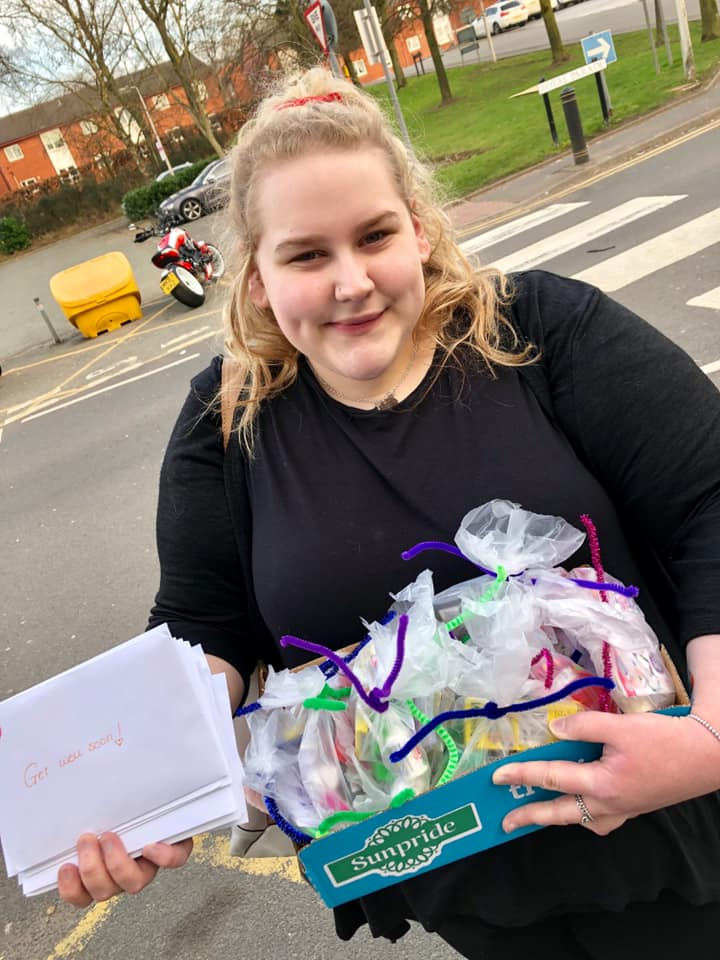

About
Beth started the Kindness Cards Project in August 2018. She spends her time hand-making cards and friendship bracelets which she then posts to anyone in the UK who has an illness, a disability, a mental health condition or who is going through a difficult time and may need cheering up.
Beth explains:
“I have autism myself, so I wanted to send my cards and bracelets to people just like me, who have similar disabilities and struggles. That was how my project started. I created an Instagram page and almost instantly I got a few messages from people who have autism and similar struggles, just like me. Now I send my cards and bracelets out to people of all ages and for many different reasons, all around the UK.”
Beth started the Kindness Project because she wanted to “do something nice for other people and add some kindness into the world.”
All she asks in return is that the person who receives the card and friendship bracelet does something kind for someone else when they get the chance.
To date Beth has sent well over 100 cards and bracelets and she recently started hand-delivering cards and bracelets to her local hospital to bring a smile to patients and to thank the hospital staff for their hard work.
The original article written on Beth can be found here
